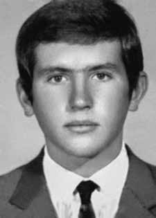

Eremias
Delizoicov
CIRCUNSTÂNCIAS DA MORTE
Eremias Delizoicov foi morto por agentes do Estado brasileiro em 16 de outubro de 1969, na cidade do Rio de Janeiro. Segundo a falsa versão apresentada pelos órgãos da repressão, Eremias teria sido morto em tiroteio com os agentes do DOI-CODI / RJ, que tentavam prendê-lo em sua casa. Essa versão foi publicada no Diário da Noite, de 21 de outubro de 1969: Um morto e três feridos foi o saldo trágico de uma diligência feita pelas autoridades da PE da Vila Militar, no bairro da Vila Cosmos, na zona norte, visando deter um grupo de subversivos que se homiziava num “aparelho” descoberto pela polícia. Agentes da PE, comandados pelo major Lacerda, quando chegaram próximos ao “aparelho” jogaram uma granada dentro da casa, para obrigar os que lá estivessem a sair e se entregarem. Após a explosão, quando o comandante Lacerda entrou no imóvel, acompanhado do capitão Ailton Guimarães e do cabo Mário Antônio Povaleri[sic], foram baleados. O major foi ferido na perna esquerda, o capitão na coxa esquerda e o cabo no braço esquerdo, com fratura exposta. O elemento, após ferir os militares, foi fuzilado e morto por agentes que participavam da diligência. O “aparelho” foi denunciado por um jovem de uns 20 anos presumíveis, que se encontra preso na Vila Militar e sua identidade está sendo mantida em sigilo. O corpo de Eremias deu entrada, como desconhecido, no Instituto Médico Legal do Rio de Janeiro, pela guia 471, da 27ª DP, na data de 17 de outubro de 1969. O exame de necropsia foi realizado pelos médicos legistas Elias Freitas e Hygino de Carvalho Hércules, que confirmaram sua morte em tiroteio. A perícia registrou que Eremias foi atingido por disparos de armas de fogo e apresentava ferimentos “lácero-contusos”, cuja procedência seria verificada na necropsia. Citaram, ainda, pelo menos 29 disparos nas paredes da casa. Os médicos legistas descreveram ferimento transfixante da cabeça com dilaceração do encéfalo. Ademais, foram descritas 19 lesões de entrada e 14 de saída de projéteis no corpo de Eremias. A certidão de óbito de Eremias foi lavrada com o nome e demais dados falsos. Ali foi registrado como morto José Araújo de Nóbrega, que ainda está vivo, além de citar o nome da viúva e uma informação de que teria deixado três filhos. O corpo de Eremias foi enterrado no Cemitério São Francisco Xavier (Cemitério do Caju), em 21 de outubro de 1969, na cova 59.262, quadra 45, com o nome de Nóbrega, o que dificultou a localização e a identificação dos seus restos mortais. No entanto, é importante registrar que, de acordo com o comunicado n° 76/69 da Secretaria de Segurança Pública de São Paulo, as impressões digitais de Eremias Delizoicov já haviam sido confirmadas pelo datiloscopista da Delegacia de Crimes contra a Pessoa, em 11 de dezembro de 1969. Ainda, há documentos das Forças Armadas com informações sobre Eremias, nos seguintes termos: a) Informe nº 379/QG-4 de 14/10/1969, da 4ª zona aérea, 2ª seção, Ministério da Aeronáutica expõe o monitoramento de Eremias feito pelos órgãos de informação pouco antes de sua morte, afirmando que “estão sendo dadas várias buscas pela área, com o fim de prender tal indivíduo, caso ainda esteja pelas cercanias”; b) Relatório Especial de Informações nº 22 da 2ª Divisão da Infantaria do II Exército que descreve fisicamente Eremias, apresenta a sua filiação e diz que abandonou a casa dos pais, em maio de 1969. Em 1993, o Ministério da Aeronáutica encaminhou um relatório ao ministro da Justiça, Maurício Corrêa, no qual relata que Eremias foi “[…] morto em 16/outubro/69, em tiroteio com membros dos Órgãos de Segurança […] ao resistir ao cerco da Polícia do Exército, em Vila Cosmos/RJ”. Somente em 1993, após ação judicial, a família conseguiu obter a certidão de óbito de Eremias com seus dados corretos, o acesso ao laudo da necropsia e trinta e uma fotos de Perícia de Local (ICE 658/69). O laudo de Perícia de Local do ICE/RJ descrevia que a casa onde Eremias foi morto encontrava-se bastante revirada, indicando, portanto, a existência de confronto. A CEMDP, por sua vez, designou o perito Celso Nenevê, para analisar e apresentar um parecer sobre o caso de Eremias, a partir dos laudos de perícia e do exame cadavérico confeccionados a época, com base em fotografias do corpo e do local do óbito. Celso Nenevê identificou, observando as fotos, escoriações não descritas no laudo e se deteve na análise dos ferimentos lacerocontusos. Das dezenove lesões produzidas por projéteis de arma de fogo, nada pôde afirmar quanto à reação vital, em virtude da qualidade e distância em que foram feitas as fotos. Os peritos da época descreveram vinte e nove impactos de projéteis nos diversos cômodos da residência, mas, estranhamente, não verificaram ou não descreveram os disparos que teriam sido feitos do interior para o exterior. Ressaltou que, pela foto, a posição do corpo não é compatível com a de repouso final, tampouco condiz com a mancha de sangue que aparece na parede. Ainda, Nenevê afirma que pelo estado que estava a casa, a partir das fotos, que uma granada ou algum outro artefato explosivo não poderia ter sido disparado dentro da residência, visto que não tinham vidros estraçalhados ou marcas no piso. Na 87ª Audiência da Comissão Estadual da Verdade de São Paulo, realizada em 16 de outubro de 2013, foi lida uma carta de José Araújo de Nóbrega na qual ele narra que conheceu Eremias em março de 1969, quando pertencia a um grupo de estudantes secundaristas do qual fazia parte, além de Eremias, Celso Lungaretti, Gerson Theodoro de Oliveira e Carlos Roberto Zanirato. Transcorrido o período no qual ocorreu a prisão e a morte de Zanirato, o grupo foi deslocado para o Rio de Janeiro, sendo dada a tarefa, a José Araújo de Nóbrega, da criação de um novo Grupo de Combate, quando foram designados os companheiros Gerson Theodoro, Tereza Ângelo, Eremias Delizoicov e Sônia Lafoz. Nóbrega, Eremias e Sônia Lafoz passaram a morar juntos em uma casa alugada na Rua Toropi, nº 59, Vila Cosmos. Na carta, José Araújo de Nóbrega narrou, ainda, que, em outubro de 1969, foi incumbido de cuidar da segurança de um congresso de coalizão da VPR com a Colina, e, retornando a sua casa, identificou um cerco militar no bairro, do qual conseguiu escapar. À noite, entretanto, ouviu a notícia de sua morte, visto que os documentos pessoais que se encontravam na casa eram os seus e que Eremias possuía o seu mesmo porte físico, o que causou uma confusão, inclusive, em seu irmão, Francisco, que reconheceu o corpo de Eremias, enterrado com seu nome no Cemitério do Caju, no Rio de Janeiro. Segundo depoimento de Demétrio Delizoicov, irmão de Eremias, à Comissão Estadual da Verdade de São Paulo, em 16 de outubro de 2013, o jovem que teria supostamente delatado o aparelho no qual Eremias vivia seria Carlos Minc: (…) no retorno de Nóbrega do exílio, da Europa, da Suécia, ele encontra meus pais, ele sabia o local por conta disso, a informação é que ele procura na lista telefônica, liga para o telefone e a pessoa com quem ele fala já não era mais, era outro parente que informou onde é que meus pais estavam morando. Então é um pouco essa história, a história todo da Nóbrega que reportei é exatamente para dar resposta. O Nóbrega informa naquela reunião que teve em 1985 com meus pais, eu estava presente, que a pessoa que teria informado o local teria sido o Carlos Minc. [Demétrio narra que ao questionar Carlos Minc sobre o tema ele respondeu] “Demétrio, aquele período nós fazíamos tantos erros que isso pode ter acontecido mesmo, mas não lembro o caso”. Ele não teve coragem de me relatar, eu compreendo isso. Em documento emitido pela Santa Casa de Misericórdia/RJ, datado de 25 de maio de 1975, foi informado que os restos mortais de Eremias foram incinerados. Efetivamente, os restos mortais de Eremias permanecem desconhecidos até a presente data. Destarte, diante da morte e da ausência de identificação plena de seus restos mortais, a Comissão Nacional da Verdade, ao conferir tratamento jurídico mais adequado ao caso, entende que Eremias Delizoicov permanece desaparecido.
Eremias Delizoicov was killed by agents of the Brazilian State on October 16, 1969, in the city of Rio de Janeiro. According to the false version presented by the repression bodies, Eremias was killed in a shootout with DOI-CODI/RJ agents, who were trying to arrest him in his home. This version was published in Diário da Noite, on October 21, 1969: One dead and three injured was the tragic result of an investigation carried out by the PE authorities of Vila Militar, in the Vila Cosmos neighborhood, in the north zone, aiming to detain a group of subversives who were committing murder in a “device” discovered by the police. PE agents, commanded by Major Lacerda, when they arrived close to the “apparatus” they threw a grenade into the house, to force those who were there to leave and surrender. After the explosion, when Commander Lacerda entered the property, accompanied by Captain Ailton Guimarães and Corporal Mário Antônio Povaleri[sic], they were shot. The major was wounded in the left leg, the captain in the left thigh and the corporal in the left arm, with an open fracture. The element, after injuring the soldiers, was shot and killed by agents who participated in the investigation. The “device” was reported by a young man of around 20 years of age, who is imprisoned in Vila Militar and his identity is being kept confidential. Eremias' body was admitted, as unknown, to the Legal Medical Institute of Rio de Janeiro, via guide 471, from the 27th DP, on October 17, 1969. The autopsy examination was carried out by coroners Elias Freitas and Hygino de Carvalho Hércules, who confirmed his death in a shootout. The experts recorded that Eremias was hit by gunshots and had “lacero-blunt” injuries, the origin of which would be verified at autopsy. They also cited at least 29 shots fired into the walls of the house. The coroners described a transfixing head injury with laceration of the brain. Furthermore, 19 entry and 14 exit injuries from projectiles were described on Eremias' body. Eremias' death certificate was drawn up with his name and other false data. There, José Araújo de Nóbrega was registered as dead, who is still alive, in addition to mentioning the name of his widow and information that he had left behind three children. Eremias' body was buried in the São Francisco Xavier Cemetery (Cemitério do Caju), on October 21, 1969, in grave 59.262, block 45, with the name Nóbrega, which made it difficult to locate and identify his remains. However, it is important to note that, according to statement No. 76/69 from the Public Security Secretariat of São Paulo, Eremias Delizoicov's fingerprints had already been confirmed by the typist from the Crimes Against Persons Police Station, on December 11, 1969. Furthermore, there are documents from the Armed Forces with information about Eremias, in the following terms: a) Report No. 379/QG-4 of 10/14/1969, from the 4th aerial zone, 2nd section, Ministry of Aeronautics exposes the monitoring of Eremias carried out by the intelligence agencies shortly before his death, stating that “several searches are being carried out in the area, with the aim of arresting this individual, if he is still in the vicinity”; b) Special Information Report nº 22 of the 2nd Infantry Division of the II Army which physically describes Eremias, presents his affiliation and says that he left his parents' home in May 1969. In 1993, the Ministry of Aeronautics sent a report to the Minister of Justice, Maurício Corrêa, in which he states that Eremias was “[…] killed on 16/October/69, in a shootout with members of the Security Bodies […] when resisting the Army Police siege, in Vila Cosmos/RJ”. Only in 1993, after legal action, the family managed to obtain Eremias' death certificate with his correct data, access to the autopsy report and thirty-one photos from the Site Expertise (ICE 658/69). The ICE/RJ Site Expertise report described that the house where Eremias was killed was heavily torn apart, therefore indicating the existence of a confrontation. CEMDP, in turn, appointed expert Celso Nenevê, to analyze and present an opinion on Eremias' case, based on the expert reports and cadaveric examination carried out at the time, based on photographs of the body and place of death. Celso Nenevê identified, by looking at the photos, abrasions not described in the report and focused on analyzing the blunt laceration injuries. Of the nineteen injuries caused by firearm projectiles, nothing could be said regarding the vital reaction, due to the quality and distance at which the photos were taken. Experts at the time described twenty-nine projectile impacts in the various rooms of the residence, but, strangely, they did not verify or describe the shots that would have been fired from inside to outside. He highlighted that, based on the photo, the position of the body is not compatible with that of final rest, nor does it match the blood stain that appears on the wall. Furthermore, Nenevê states that based on the state of the house, based on the photos, a grenade or other explosive device could not have been fired inside the residence, as there were no shattered glass or marks on the floor. At the 87th Hearing of the São Paulo State Truth Commission, held on October 16, 2013, a letter from José Araújo de Nóbrega was read in which he narrates that he met Eremias in March 1969, when he belonged to a group of high school students of which he was part, in addition to Eremias, Celso Lungaretti, Gerson Theodoro de Oliveira and Carlos Roberto Zanirato. After the period in which Zanirato's arrest and death occurred, the group was moved to Rio de Janeiro, with José Araújo de Nóbrega given the task of creating a new Combat Group, when companions Gerson Theodoro, Tereza Ângelo, Eremias Delizoicov and Sônia Lafoz were appointed. Nóbrega, Eremias and Sônia Lafoz started living together in a rented house at Rua Toropi, nº 59, Vila Cosmos. In the letter, José Araújo de Nóbrega also narrated that, in October 1969, he was tasked with taking care of the security of a VPR coalition congress with Colina, and, returning to his home, he identified a military siege in the neighborhood, from which he managed to escape. At night, however, he heard the news of his death, since the personal documents that were in the house were his own and that Eremias had the same physical size, which caused confusion, including among his brother, Francisco, who recognized Eremias' body, buried with his name in the Caju Cemetery, in Rio de Janeiro. According to the testimony of Demétrio Delizoicov, Eremias' brother, to the State Truth Commission of São Paulo, on October 16, 2013, the young man who allegedly reported the device in which Eremias lived was Carlos Minc: (…) on Nóbrega's return from exile, from Europe, from Sweden, he met my parents, he knew the place because of that, the information is that he looked in the phone book, called the phone and the person he spoke to was no longer there. Furthermore, it was another relative who informed me where my parents were living. So it's a bit of this story, the whole Nóbrega story that I reported is exactly to provide an answer. Nóbrega informs in that meeting he had in 1985 with my parents, I was present, that the person who would have informed the location would have been Carlos Minc. [Demétrio narrates that when questioning Carlos Minc about the topic he replied] “Demetrio, during that period we made so many mistakes that this could have actually happened, but I don’t remember the case”. He didn't have the courage to report it to me, I understand that. In a document issued by Santa Casa de Misericórdia/RJ, dated May 25, 1975, it was reported that Eremias' mortal remains were incinerated. Indeed, Eremias' mortal remains remain unknown to this day. Therefore, in light of his death and the lack of full identification of his remains, the National Truth Commission, by granting more appropriate legal treatment to the case, understands that Eremias Delizoicov remains missing.
Eremias Delizoicov fue asesinado por agentes del Estado brasileño el 16 de octubre de 1969, en la ciudad de Río de Janeiro. Según la versión falsa presentada por los órganos de represión, Eremias fue asesinado en un tiroteo con agentes del DOI-CODI/RJ, que intentaban detenerlo en su casa. Esta versión fue publicada en el Diário da Noite, el 21 de octubre de 1969: Un muerto y tres heridos fue el trágico resultado de una investigación realizada por las autoridades del PE de Vila Militar, en el barrio de Vila Cosmos, en la zona norte, con el objetivo de detener a un grupo de subversivos que cometían asesinato en un “dispositivo” descubierto por la policía. Agentes del PE, comandados por el mayor Lacerda, al llegar cerca del “aparato” arrojaron una granada al interior de la casa, para obligar a los que allí se encontraban a salir y entregarse. Después de la explosión, cuando el comandante Lacerda ingresó al inmueble, acompañado por el capitán Ailton Guimarães y el cabo Mário Antônio Povaleri[sic], fueron fusilados. El mayor resultó herido en la pierna izquierda, el capitán en el muslo izquierdo y el cabo en el brazo izquierdo, con fractura abierta. El elemento, tras herir a los militares, fue asesinado a tiros por agentes que participaban en la investigación. El “dispositivo” fue denunciado por un joven de alrededor de 20 años, que se encuentra recluido en Vila Militar y su identidad se mantiene en reserva. El cuerpo de Eremias fue ingresado, en calidad de desconocido, en el Instituto Médico Legal de Río de Janeiro, por la guía 471, del 27º DP, el 17 de octubre de 1969. El examen de la autopsia fue realizado por los médicos forenses Elías Freitas e Hygino de Carvalho Hércules, quienes confirmaron su muerte en un tiroteo. Los peritos registraron que Eremias fue alcanzado por disparos de arma de fuego y presentaba heridas “lacero-contundentes”, cuyo origen se verificará en la autopsia. También citaron al menos 29 disparos contra las paredes de la casa. Los forenses describieron una lesión transfixiante en la cabeza con laceración del cerebro. Además, en el cuerpo de Eremias se describieron 19 heridas de entrada y 14 de salida de proyectiles. El certificado de defunción de Eremias fue redactado con su nombre y otros datos falsos. Allí fue registrado como muerto José Araújo de Nóbrega, quien aún se encuentra con vida, además de mencionar el nombre de su viuda e información de que había dejado tres hijos. El cuerpo de Eremias fue enterrado en el Cementerio São Francisco Xavier (Cemitério do Caju), el 21 de octubre de 1969, en la fosa 59.262, manzana 45, con el nombre de Nóbrega, lo que dificultó la localización e identificación de sus restos. Sin embargo, es importante señalar que, según declaración nº 76/69 de la Secretaría de Seguridad Pública de São Paulo, las huellas dactilares de Eremias Delizoicov ya habían sido confirmadas por la mecanógrafa de la Comisaría de Crímenes Contra las Personas, el 11 de diciembre de 1969. Además, existen documentos de las Fuerzas Armadas con información sobre Eremias, en los siguientes términos: a) Informe nº 379/QG-4 de 14/10/1969, desde la 4ª zona aérea, 2ª sección, Ministerio de Aeronáutica expone el seguimiento a Eremias realizado por los organismos de inteligencia poco antes de su muerte, afirmando que “se están realizando varios registros en la zona, con el objetivo de detener a este individuo, si aún se encuentra en las inmediaciones”; b) Informe de Información Especial nº 22 de la 2.ª División de Infantería del II Ejército que describe físicamente a Eremias, presenta su filiación y dice que abandonó la casa de sus padres en mayo de 1969. En 1993, el Ministerio de Aeronáutica envió un informe al Ministro de Justicia, Maurício Corrêa, en el que afirma que Eremias fue “[…] asesinado el 16/octubre/69, en un tiroteo con miembros de los Cuerpos de Seguridad […] al resistir el asedio de la Policía Militar, en Vila Cosmos/RJ”. Recién en 1993, luego de acciones legales, la familia logró obtener el certificado de defunción de Eremias con sus datos correctos, acceso al informe de la autopsia y treinta y una fotografías del Peritaje del Sitio (ICE 658/69). El informe de ICE/RJ Site Expertise describió que la casa donde Eremias fue asesinado estaba fuertemente destrozada, lo que indica la existencia de un enfrentamiento. El CEMDP, a su vez, designó al perito Celso Nenevê, para analizar y presentar un dictamen sobre el caso de Eremias, con base en los peritajes y exámenes cadavéricos realizados en la época, con base en fotografías del cuerpo y del lugar de la muerte. Celso Nenevê identificó, observando las fotografías, abrasiones no descritas en el informe y se centró en analizar las laceraciones contundentes. De las diecinueve heridas provocadas por proyectiles de arma de fuego, nada se puede decir respecto de la reacción vital, debido a la calidad y distancia a la que fueron tomadas las fotografías. Los peritos de la época describieron veintinueve impactos de proyectiles en las distintas estancias de la residencia, pero, curiosamente, no comprobaron ni describieron los disparos que se habrían realizado desde el interior hacia el exterior. Destacó que, con base en la fotografía, la posición del cuerpo no es compatible con la de reposo final, ni coincide con la mancha de sangre que aparece en la pared. Además, Nenevê afirma que, según el estado de la casa, según las fotografías, no se podría haber disparado una granada u otro artefacto explosivo dentro de la residencia, ya que no había cristales rotos ni marcas en el suelo. En la 87ª Audiencia de la Comisión de la Verdad del Estado de São Paulo, celebrada el 16 de octubre de 2013, se leyó una carta de José Araújo de Nóbrega en la que narra que conoció a Eremias en marzo de 1969, cuando éste pertenecía a un grupo de estudiantes de secundaria del que formaba parte, además de Eremias, Celso Lungaretti, Gerson Theodoro de Oliveira y Carlos Roberto Zanirato. Luego del período en que ocurrió la detención y muerte de Zanirato, el grupo fue trasladado a Río de Janeiro, encargándose José Araújo de Nóbrega de crear un nuevo Grupo de Combate, cuando fueron nombrados los compañeros Gerson Theodoro, Tereza Ângelo, Eremias Delizoicov y Sônia Lafoz. Nóbrega, Eremias y Sônia Lafoz empezaron a vivir juntos en una casa alquilada en Rua Toropi, nº 59, Vila Cosmos. En la carta, José Araújo de Nóbrega también narró que, en octubre de 1969, le encomendaron cuidar la seguridad de un congreso de la coalición del VPR con Colina, y al regresar a su casa identificó un cerco militar en el barrio, del que logró escapar. Por la noche, sin embargo, conoció la noticia de su muerte, ya que los documentos personales que se encontraban en la casa eran suyos y que Eremías tenía el mismo tamaño físico, lo que causó confusión, incluso entre su hermano, Francisco, quien reconoció el cuerpo de Eremías, enterrado con su nombre en el Cementerio de Caju, en Río de Janeiro. Según testimonio de Demétrio Delizoicov, hermano de Eremias, ante la Comisión Estatal de la Verdad de São Paulo, el 16 de octubre de 2013, el joven que presuntamente denunció el dispositivo en el que vivía Eremias era Carlos Minc: (…) al regreso de Nóbrega del exilio, de Europa, de Suecia, conoció a mis padres, por eso conocía el lugar, la información es que buscó en la guía telefónica, llamó al teléfono y la persona con la que habló no era más tiempo allí. Además, fue otro familiar quien me informó dónde vivían mis padres. Entonces es un poco de esta historia, toda la historia de Nóbrega que conté es exactamente para dar una respuesta. Nóbrega informa en aquella reunión que tuvo en 1985 con mis padres, yo estaba presente, que quien habría informado el lugar habría sido Carlos Minc. [Narra Demétrio que al interrogar a Carlos Minc sobre el tema respondió] “Demetrio, en ese período cometimos tantos errores que en realidad esto pudo haber pasado, pero no recuerdo el caso”. No tuvo el valor de denunciarme, lo entiendo. En documento emitido por la Santa Casa de Misericórdia/RJ, de 25 de mayo de 1975, se informó que los restos mortales de Eremias fueron incinerados. De hecho, los restos mortales de Eremias siguen siendo desconocidos hasta el día de hoy. Por lo tanto, ante su muerte y la falta de identificación completa de sus restos, la Comisión Nacional de la Verdad, al otorgar un tratamiento jurídico más adecuado al caso, entiende que Eremias Delizoicov continúa desaparecido.